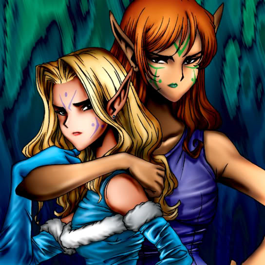

Gemini Elf

STATS
ATK: 1900
DEF: 900DECK COST
Deck Cost per Card: 28Fusion List (7 Possible Fusions)
- Gemini Elf + Ancient Jar = Mystical Sand
- Gemini Elf + Castle of Dark Illusions = Dark Elf
- Gemini Elf + Charubin the Fire Knight = Ushi Oni
- Gemini Elf + Eldeen = Dark Elf
- Gemini Elf + Giant Soldier of Stone = Mystical Sand
- Gemini Elf + Morphing Jar = Mystical Sand
- Gemini Elf + Stone Armadiller = Mystical Sand